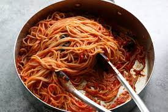

Spaghetti

Homemade Spaghetti
Prepare spaghetti at home just like mom did
This simple recipe will help fill your heart and your tummy
Ingredients
- 8 oz spaghetti noodle
- 1 onion, minced
- 6 oz tomato paste
- 10 oz condensed tomato soup
- 3 cups water
Steps
- Bring a large pot of lightly salted water to a boil. Add pasta
and cook for 8 to 10 minutes or until al dente; drain.
- In a large skillet over medium heat, cook ground beef with onion until
meat is brown. Drain. Return meat mixture to pan with tomato paste,
tomato soup and water. Cook, stirring, until heated through and
thickened, 5 to 15 minutes. .
- Serve over cooked pasta
- Enjoy!